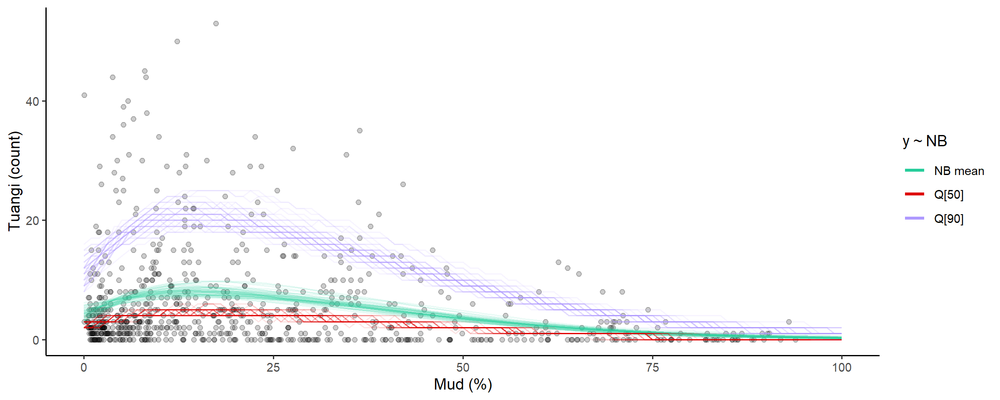

Getting started
getting-started.RmdOverview
This vignette presents a minimal workflow for modelling the distribution of a species abundance along an environmental gradient. See …
Setup
# library(cmdstanr)
library(ggplot2)
library(modskurt)
# only needs to be run every time package installed or updated
# TODO: find better edit dir for testing only:
compile_stanmodels()
#> [1] "Compiling C:/Users/hdrab/AppData/Local/R/win-library/4.3/modskurt/stan/discrete.stan"
#> [1] "C:/Users/hdrab/AppData/Local/R/win-library/4.3/modskurt/stan/discrete.stan"Data and questions
# A.0. data and questions
data(tuangi)
tuangi
#> # A tibble: 764 × 11
#> year lon lat count mud_pct tn_conc toc_pct tp_conc sst_min sst_avg
#> <chr> <dbl> <dbl> <dbl> <dbl> <dbl> <dbl> <dbl> <dbl> <dbl>
#> 1 2017 175. -40.5 0 19.8 250 0.32 380 12.8 15.3
#> 2 2018 175. -40.5 1 26.7 500 0.3 380 12.9 15.6
#> 3 2017 175. -40.5 0 20 250 0.29 370 12.8 15.3
#> 4 2018 175. -40.5 0 23.3 250 0.24 360 12.9 15.6
#> 5 2017 175. -40.5 1 17.2 250 0.28 350 12.8 15.3
#> 6 2018 175. -40.5 0 19.9 250 0.21 330 12.9 15.6
#> 7 2017 175. -40.5 0 26.9 250 0.28 380 12.8 15.3
#> 8 2018 175. -40.5 0 44.1 500 0.39 420 12.9 15.6
#> 9 2017 175. -40.5 0 22.5 250 0.26 380 12.8 15.3
#> 10 2018 175. -40.5 0 34.8 250 0.34 390 12.9 15.6
#> # ℹ 754 more rows
#> # ℹ 1 more variable: sst_max <dbl>Initial model
# A.1. specify initial model
spec <-
mskt_spec(data = tuangi,
# response and gradients (optional names for tidier outputs)
y = c('Tuangi (count)' = 'count'),
x = c('Mud (%)' = 'mud_pct'),
# distribution of abundance
dist = 'nb',
# shape of dist mean function, see ?mskt_shape()
shape = 'rdp',
# make predictions for every 1% of mud content
pred_grid = 0:100)
#> Warning: Removed 2 rows containing missing values.
str(spec)
#> List of 20
#> $ sample_prior: int 0
#> $ hp_H : num [1:2] 1.5 5
#> $ hp_m : num [1:2] 1 1
#> $ hp_s : num [1:2] -2 0.6
#> $ hp_r : num [1:2] 1.2 1.2
#> $ hp_d : num [1:2] 0.5 1
#> $ hp_p : num [1:2] 2 3
#> $ use_r : int 1
#> $ fix_r : num 0.5
#> $ use_d : int 1
#> $ fix_d : num 0
#> $ use_p : int 1
#> $ fix_p : num 1
#> $ use_zi : int 0
#> $ hp_kap : num 0.5
#> $ hp_g0 : num [1:2] 3 1.5
#> $ hp_g1 : num 3
#> $ Nrep : int 101
#> $ xrep : int [1:101] 0 1 2 3 4 5 6 7 8 9 ...
#> $ data :function (prop = 1, seed = NULL)
#> ..- attr(*, "srcref")= 'srcref' int [1:8] 97 16 130 3 16 3 728 761
#> .. ..- attr(*, "srcfile")=Classes 'srcfilealias', 'srcfile' <environment: 0x00000220c729ef40>
#> - attr(*, "pars")= chr [1:7] "H" "m" "s" "r" ...
#> - attr(*, "nms")=List of 2
#> ..$ y: chr "Tuangi (count)"
#> ..$ x: chr "Mud (%)"
#> - attr(*, "dist")= chr "nb"
#> - attr(*, "shape")= chr "rdp"
#> - attr(*, "class")= chr [1:2] "mskt-spec" "list"Fit subset model (fail fast)
# C.1. fit subset model to "training" data - fail fast
fit_train <-
mskt_fit(spec,
# set the training sample
train_prop = 0.3,
train_seed = 1234,
seed = 1234,
iter_warmup = 200,
iter_sampling = 100,
chains = 6,
parallel_chains = 6)
#> Running MCMC with 6 parallel chains...
#>
#> Chain 1 Iteration: 1 / 300 [ 0%] (Warmup)
#> Chain 2 Iteration: 1 / 300 [ 0%] (Warmup)
#> Chain 3 Iteration: 1 / 300 [ 0%] (Warmup)
#> Chain 4 Iteration: 1 / 300 [ 0%] (Warmup)
#> Chain 5 Iteration: 1 / 300 [ 0%] (Warmup)
#> Chain 6 Iteration: 1 / 300 [ 0%] (Warmup)
#> Chain 1 Iteration: 100 / 300 [ 33%] (Warmup)
#> Chain 2 Iteration: 100 / 300 [ 33%] (Warmup)
#> Chain 5 Iteration: 100 / 300 [ 33%] (Warmup)
#> Chain 3 Iteration: 100 / 300 [ 33%] (Warmup)
#> Chain 4 Iteration: 100 / 300 [ 33%] (Warmup)
#> Chain 6 Iteration: 100 / 300 [ 33%] (Warmup)
#> Chain 1 Iteration: 200 / 300 [ 66%] (Warmup)
#> Chain 1 Iteration: 201 / 300 [ 67%] (Sampling)
#> Chain 5 Iteration: 200 / 300 [ 66%] (Warmup)
#> Chain 2 Iteration: 200 / 300 [ 66%] (Warmup)
#> Chain 3 Iteration: 200 / 300 [ 66%] (Warmup)
#> Chain 5 Iteration: 201 / 300 [ 67%] (Sampling)
#> Chain 2 Iteration: 201 / 300 [ 67%] (Sampling)
#> Chain 3 Iteration: 201 / 300 [ 67%] (Sampling)
#> Chain 6 Iteration: 200 / 300 [ 66%] (Warmup)
#> Chain 4 Iteration: 200 / 300 [ 66%] (Warmup)
#> Chain 6 Iteration: 201 / 300 [ 67%] (Sampling)
#> Chain 4 Iteration: 201 / 300 [ 67%] (Sampling)
#> Chain 1 Iteration: 300 / 300 [100%] (Sampling)
#> Chain 1 finished in 2.0 seconds.
#> Chain 5 Iteration: 300 / 300 [100%] (Sampling)
#> Chain 2 Iteration: 300 / 300 [100%] (Sampling)
#> Chain 2 finished in 0.0 seconds.
#> Chain 5 finished in 2.2 seconds.
#> Chain 3 Iteration: 300 / 300 [100%] (Sampling)
#> Chain 2 finished in 2.3 seconds.
#> Chain 3 finished in 2.3 seconds.
#> Chain 6 Iteration: 300 / 300 [100%] (Sampling)
#> Chain 6 finished in 2.4 seconds.
#> Chain 4 Iteration: 300 / 300 [100%] (Sampling)
#> Chain 4 finished in 2.6 seconds.
#>
#> All 6 chains finished successfully.
#> Mean chain execution time: 2.3 seconds.
#> Total execution time: 2.9 seconds.
#> Warning: 4 of 600 (1.0%) transitions ended with a divergence.
#> See https://mc-stan.org/misc/warnings for details.
# OPTIONAL: refine model spec or fit parameters
# C.2 check convergence (multimodality), sharpness
check_computation(fit_train)
#> spec: nb[Hmsrdp] using 229 obs out of 762 (30% sample)
#> post: 6 chains each with 100 draws (600 total)
#> Warning: 4 of 600 (1.0%) transitions ended with a divergence.
#> See https://mc-stan.org/misc/warnings for details.
#> $summary
#> # A tibble: 7 × 10
#> variable mean median sd mad q5 q95 rhat ess_bulk ess_tail
#> <chr> <num> <num> <num> <num> <num> <num> <rhat> <ess> <ess>
#> 1 H 8.98 8.84 1.04 0.966 7.43 10.9 1.02 290 (0.5) 219 (0.4)
#> 2 m 10.5 10.4 5.30 5.18 2.07 18.3 1.04 216 (0.4) 100 (0.2)
#> 3 s 25.0 24.0 7.59 7.16 14.5 38.5 1.02 162 (0.3) 248 (0.4)
#> 4 r 0.660 0.678 0.161 0.165 0.348 0.890 1.01 306 (0.5) 369 (0.6)
#> 5 d 2.01 1.65 1.33 1.20 0.441 4.57 1.01 209 (0.3) 340 (0.6)
#> 6 p 1.52 1.52 0.552 0.627 0.629 2.40 1.00 377 (0.6) 231 (0.4)
#> 7 kap 1.25 1.25 0.0659 0.0693 1.16 1.36 1.01 466 (0.8) 323 (0.5)
#>
#> $diagnostics
#> chain_id warmup sampling total num_divergent num_max_treedepth ebfmi
#> 1 1 1.340 0.641 1.981 0 0 0.9459639
#> 2 2 1.543 0.738 2.281 2 0 1.1395318
#> 3 3 1.577 0.769 2.346 0 0 0.9004653
#> 4 4 1.725 0.922 2.647 0 0 0.6519676
#> 5 5 1.393 0.825 2.218 2 0 1.4106605
#> 6 6 1.630 0.739 2.369 0 0 1.0062564
# OPTIONAL: refine model spec or fit parametersFit full model
# D.1. fit full model (accepting defaults, see ?mskt_fit)
fit_full <-
mskt_fit(spec,
seed = 1234,
chains = 4,
parallel_chains = 4)
#> Running MCMC with 4 parallel chains...
#>
#> Chain 1 Iteration: 1 / 2000 [ 0%] (Warmup)
#> Chain 2 Iteration: 1 / 2000 [ 0%] (Warmup)
#> Chain 3 Iteration: 1 / 2000 [ 0%] (Warmup)
#> Chain 4 Iteration: 1 / 2000 [ 0%] (Warmup)
#> Chain 2 Iteration: 100 / 2000 [ 5%] (Warmup)
#> Chain 3 Iteration: 100 / 2000 [ 5%] (Warmup)
#> Chain 4 Iteration: 100 / 2000 [ 5%] (Warmup)
#> Chain 1 Iteration: 100 / 2000 [ 5%] (Warmup)
#> Chain 2 Iteration: 200 / 2000 [ 10%] (Warmup)
#> Chain 4 Iteration: 200 / 2000 [ 10%] (Warmup)
#> Chain 3 Iteration: 200 / 2000 [ 10%] (Warmup)
#> Chain 1 Iteration: 200 / 2000 [ 10%] (Warmup)
#> Chain 2 Iteration: 300 / 2000 [ 15%] (Warmup)
#> Chain 4 Iteration: 300 / 2000 [ 15%] (Warmup)
#> Chain 3 Iteration: 300 / 2000 [ 15%] (Warmup)
#> Chain 1 Iteration: 300 / 2000 [ 15%] (Warmup)
#> Chain 2 Iteration: 400 / 2000 [ 20%] (Warmup)
#> Chain 3 Iteration: 400 / 2000 [ 20%] (Warmup)
#> Chain 4 Iteration: 400 / 2000 [ 20%] (Warmup)
#> Chain 1 Iteration: 400 / 2000 [ 20%] (Warmup)
#> Chain 2 Iteration: 500 / 2000 [ 25%] (Warmup)
#> Chain 3 Iteration: 500 / 2000 [ 25%] (Warmup)
#> Chain 1 Iteration: 500 / 2000 [ 25%] (Warmup)
#> Chain 4 Iteration: 500 / 2000 [ 25%] (Warmup)
#> Chain 2 Iteration: 600 / 2000 [ 30%] (Warmup)
#> Chain 1 Iteration: 600 / 2000 [ 30%] (Warmup)
#> Chain 3 Iteration: 600 / 2000 [ 30%] (Warmup)
#> Chain 4 Iteration: 600 / 2000 [ 30%] (Warmup)
#> Chain 2 Iteration: 700 / 2000 [ 35%] (Warmup)
#> Chain 1 Iteration: 700 / 2000 [ 35%] (Warmup)
#> Chain 3 Iteration: 700 / 2000 [ 35%] (Warmup)
#> Chain 4 Iteration: 700 / 2000 [ 35%] (Warmup)
#> Chain 1 Iteration: 800 / 2000 [ 40%] (Warmup)
#> Chain 2 Iteration: 800 / 2000 [ 40%] (Warmup)
#> Chain 3 Iteration: 800 / 2000 [ 40%] (Warmup)
#> Chain 4 Iteration: 800 / 2000 [ 40%] (Warmup)
#> Chain 1 Iteration: 900 / 2000 [ 45%] (Warmup)
#> Chain 2 Iteration: 900 / 2000 [ 45%] (Warmup)
#> Chain 3 Iteration: 900 / 2000 [ 45%] (Warmup)
#> Chain 4 Iteration: 900 / 2000 [ 45%] (Warmup)
#> Chain 1 Iteration: 1000 / 2000 [ 50%] (Warmup)
#> Chain 1 Iteration: 1001 / 2000 [ 50%] (Sampling)
#> Chain 4 Iteration: 1000 / 2000 [ 50%] (Warmup)
#> Chain 2 Iteration: 1000 / 2000 [ 50%] (Warmup)
#> Chain 4 Iteration: 1001 / 2000 [ 50%] (Sampling)
#> Chain 2 Iteration: 1001 / 2000 [ 50%] (Sampling)
#> Chain 3 Iteration: 1000 / 2000 [ 50%] (Warmup)
#> Chain 3 Iteration: 1001 / 2000 [ 50%] (Sampling)
#> Chain 4 Iteration: 1100 / 2000 [ 55%] (Sampling)
#> Chain 1 Iteration: 1100 / 2000 [ 55%] (Sampling)
#> Chain 3 Iteration: 1100 / 2000 [ 55%] (Sampling)
#> Chain 2 Iteration: 1100 / 2000 [ 55%] (Sampling)
#> Chain 4 Iteration: 1200 / 2000 [ 60%] (Sampling)
#> Chain 1 Iteration: 1200 / 2000 [ 60%] (Sampling)
#> Chain 4 Iteration: 1300 / 2000 [ 65%] (Sampling)
#> Chain 3 Iteration: 1200 / 2000 [ 60%] (Sampling)
#> Chain 2 Iteration: 1200 / 2000 [ 60%] (Sampling)
#> Chain 4 Iteration: 1400 / 2000 [ 70%] (Sampling)
#> Chain 1 Iteration: 1300 / 2000 [ 65%] (Sampling)
#> Chain 3 Iteration: 1300 / 2000 [ 65%] (Sampling)
#> Chain 4 Iteration: 1500 / 2000 [ 75%] (Sampling)
#> Chain 2 Iteration: 1300 / 2000 [ 65%] (Sampling)
#> Chain 4 Iteration: 1600 / 2000 [ 80%] (Sampling)
#> Chain 3 Iteration: 1400 / 2000 [ 70%] (Sampling)
#> Chain 1 Iteration: 1400 / 2000 [ 70%] (Sampling)
#> Chain 2 Iteration: 1400 / 2000 [ 70%] (Sampling)
#> Chain 4 Iteration: 1700 / 2000 [ 85%] (Sampling)
#> Chain 3 Iteration: 1500 / 2000 [ 75%] (Sampling)
#> Chain 4 Iteration: 1800 / 2000 [ 90%] (Sampling)
#> Chain 1 Iteration: 1500 / 2000 [ 75%] (Sampling)
#> Chain 2 Iteration: 1500 / 2000 [ 75%] (Sampling)
#> Chain 4 Iteration: 1900 / 2000 [ 95%] (Sampling)
#> Chain 3 Iteration: 1600 / 2000 [ 80%] (Sampling)
#> Chain 1 Iteration: 1600 / 2000 [ 80%] (Sampling)
#> Chain 2 Iteration: 1600 / 2000 [ 80%] (Sampling)
#> Chain 4 Iteration: 2000 / 2000 [100%] (Sampling)
#> Chain 4 finished in 41.1 seconds.
#> Chain 3 Iteration: 1700 / 2000 [ 85%] (Sampling)
#> Chain 1 Iteration: 1700 / 2000 [ 85%] (Sampling)
#> Chain 2 Iteration: 1700 / 2000 [ 85%] (Sampling)
#> Chain 3 Iteration: 1800 / 2000 [ 90%] (Sampling)
#> Chain 1 Iteration: 1800 / 2000 [ 90%] (Sampling)
#> Chain 2 Iteration: 1800 / 2000 [ 90%] (Sampling)
#> Chain 3 Iteration: 1900 / 2000 [ 95%] (Sampling)
#> Chain 1 Iteration: 1900 / 2000 [ 95%] (Sampling)
#> Chain 2 Iteration: 1900 / 2000 [ 95%] (Sampling)
#> Chain 3 Iteration: 2000 / 2000 [100%] (Sampling)
#> Chain 3 finished in 50.3 seconds.
#> Chain 1 Iteration: 2000 / 2000 [100%] (Sampling)
#> Chain 1 finished in 52.2 seconds.
#> Chain 2 Iteration: 2000 / 2000 [100%] (Sampling)
#> Chain 2 finished in 52.6 seconds.
#>
#> All 4 chains finished successfully.
#> Mean chain execution time: 49.1 seconds.
#> Total execution time: 52.7 seconds.
#> Warning: 3 of 4000 (0.0%) transitions ended with a divergence.
#> See https://mc-stan.org/misc/warnings for details.
# D.2 check convergence (multimodality), sharpness
check_computation(fit_full)
#> spec: nb[Hmsrdp] using 762 obs out of 762 (100% sample)
#> post: 4 chains each with 1000 draws (4000 total)
#> Warning: 3 of 4000 (0.0%) transitions ended with a divergence.
#> See https://mc-stan.org/misc/warnings for details.
#> $summary
#> # A tibble: 7 × 10
#> variable mean median sd mad q5 q95 rhat ess_bulk ess_tail
#> <chr> <num> <num> <num> <num> <num> <num> <rha> <ess> <ess>
#> 1 H 8.20 8.18 0.650 0.650 7.19 9.32 1 2182 (0.5) 2104 (0.5)
#> 2 m 14.3 14.3 2.89 2.84 9.91 19.2 1 1555 (0.4) 1426 (0.4)
#> 3 s 22.2 21.8 5.47 5.39 14.1 31.6 1 1410 (0.4) 1672 (0.4)
#> 4 r 0.769 0.789 0.0995 0.0864 0.573 0.890 1 1481 (0.4) 1300 (0.3)
#> 5 d 1.67 1.45 1.00 0.900 0.417 3.56 1 1513 (0.4) 1940 (0.5)
#> 6 p 1.35 1.35 0.555 0.609 0.478 2.32 1 2220 (0.6) 2171 (0.5)
#> 7 kap 1.19 1.19 0.0366 0.0364 1.13 1.25 1 2397 (0.6) 2126 (0.5)
#>
#> $diagnostics
#> chain_id warmup sampling total num_divergent num_max_treedepth ebfmi
#> 1 1 21.321 30.899 52.220 0 0 0.8139661
#> 2 2 21.733 30.887 52.620 0 0 0.8724087
#> 3 3 22.036 28.276 50.312 0 0 0.9130063
#> 4 4 21.625 19.489 41.114 3 0 0.9986825
# OPTIONAL: refine model spec or fit parametersCheck full model
# D.3. verify posterior specification
# check_post_dens(fit_full)
# check_post_dist(fit_full)
# check_post_zero(fit_full)
# uses loocv for discrete pit and pareto-k
# check_post_calibration(fit_train)
# check_post_influencers(fit_train)
# OPTIONAL: refine model spec or fit parametersUse the model
Plot summaries of the abundance distribution
# E. use the model
# plot the distribution of abundance along the gradient
abundance_dist(fit_full,
summaries = c('mean', 'median', 'q90'),
# whether to use expectations and quantiles from nb or zinbl
include_zero_inflation = TRUE)
Calculate ranges of x for different percentages of abundance measures
# assess different range measures of abundance along the gradient
abundance_range(fit_full,
# smallest range with ...
capture_pct = 75,
# mean abundance >= % of max abundance (highest mean)
using_range = 'high_zone',
# which distribution summary to use
based_on = 'q90',
# one-sided threshold or central range
region = 'centre',
# whether to use expectations and quantiles from nb or zinbl
include_zero_inflation = FALSE)
#>
#> Species range (see x.avg row) calculated as the region of x where the 90 prob. quantile of abundance (Q[90]) is within 75% of the highest value of Q[90] along x (averaged across posterior draws):
#> left centre right
#> q90.avg 11.5483871 21.4516129 5.31013610
#> q90.se 0.3465303 0.3035231 0.09545843
#> x.avg 0.0000000 14.7589769 64.35970750
#> x.se 0.0000000 0.3995637 0.61658070Visually display abundance ranges
# or plot them as well
# we'll compare high-zone and most-dens here using patchwork
library(patchwork)
(
abundance_range(fit_full,
capture_pct = 75,
using_range = 'high_zone',
based_on = 'q90',
region = 'centre',
plotted = TRUE,
range_colour = 'red') +
labs(subtitle = '75% Highest Abundance Zone (HAZ)')
) + (
abundance_range(fit_full,
capture_pct = 75,
using_range = 'most_dens',
based_on = 'q90',
region = 'centre',
plotted = TRUE,
range_colour = 'blue') +
labs(subtitle = '75% Abundance Density Limit (ADL)')
) +
plot_layout(guides = 'collect')
#>
#> Species range (see x.avg row) calculated as the region of x where the 90 prob. quantile of abundance (Q[90]) is within 75% of the highest value of Q[90] along x (averaged across posterior draws):
#> left centre right
#> q90.avg 10.7500000 21.6666667 5.25479798
#> q90.se 0.3958572 0.2669383 0.08733024
#> x.avg 0.0000000 14.5460984 64.56489899
#> x.se 0.0000000 0.6947652 0.51008166
#>
#> Species range (see x.avg row) calculated as the smallest region of x where the density of 90 prob. quantile of abundance (Q[90]) is equal to 75% of the total density of Q[90] along x (averaged across posterior draws):
#> left centre right
#> q90.avg 19.1941995 18.3502066 6.9286182
#> q90.se 0.2598815 0.2499261 0.1511909
#> x.avg 7.3586975 26.6738178 58.1226551
#> x.se 0.1137862 0.2028184 0.4025957
# note how HAZ prefers higher relative abundance summaries as opposed to ADL
# which considers total abundance summaries irrespective of the relative
# abundance at each x (e.g. tuangi appear quite abundant in low mud %, but
# their density along the whole gradient is skewed towards slightly higher mud
# content)
# OPTIONAL (but not advised): refine model spec or fit parameters